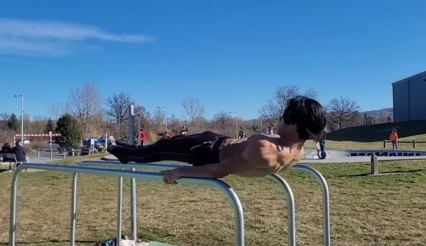

The one-arm planche is a breath-taking display of immense shoulder control, balance, and coordination. To achieve this skill, you need to fully master the full planche progression first. Working on the one-arm variation requires an understanding of lever biomechanics.
In order to balance one arm while maintaining the planche figure, you need to lean towards the base arm further. This puts extra force on your wrist and anterior deltoids. Additional demand from the oblique muscles is already needed to keep your hips squared and maintain a pristine form of the one-arm planche. This is hand-balancing at its finest.
One-arm handstand
The one-arm handstand is another beast to tame! Because it’s a static hold, there are many micro-corrections needed to be performed if you want to keep the balance up.
The difficulty shifting from two arms to a single arm is not just twice as hard. It becomes exponentially more difficult because you need to balance from multiple directions compared to a two-arm handstand in which you’re mostly going to fall either forward or backward.
Even with the high difficulty, it’s still a very achievable skill at any age as it has more focus on the balancing element.
Victorian cross
Whether done on the rings or even just on the floor, the Victorian cross is definitely of the most impressive feats of strength in the calisthenics community and is reserved for the elite in gymnastics. The Victorian cross is a reverse Maltese in which a high level of scapula retraction and depression is needed.

Iron cross
The iron cross is a static strength exercise and a superb display of bodily control and strength. It's an impressive exercise to witness and is one of the most recognisable gymnastics rings exercises.
The iron cross is also a very difficult exercise for the non-gymnast and takes dedicated training to acheive, but isn't beyond the means of the recreational athlete. To add some perspective to this, on the gymnastics skills scale (A - E, A being the easiest skills) the iron cross is measured as a B skill.
The exercise challenges almost the entire upper body at one time, requiring immense coordinated effort to maintain the hold and control the descent.
Maltese Planche
The maltese planche is a variation of the full planche and is generally considered more difficult. Some advanced athletes are the exception, as they find the maltese planche easier than the full planche. The reason for this is the different ratios of muscle power required.
Since you are leaning further forward and have a wider grip, the core strength is not used as much, resulting in a much higher load on the front shoulder and straight arm strength.